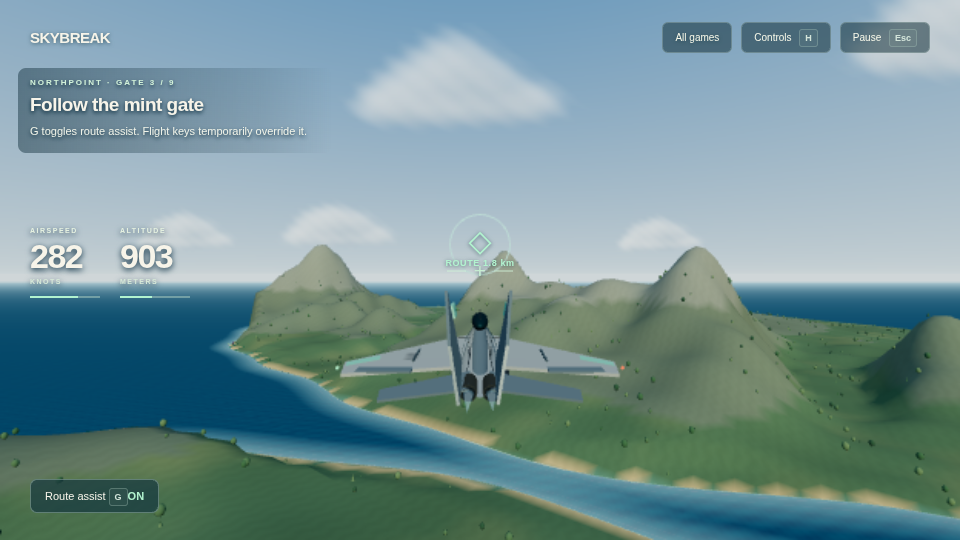
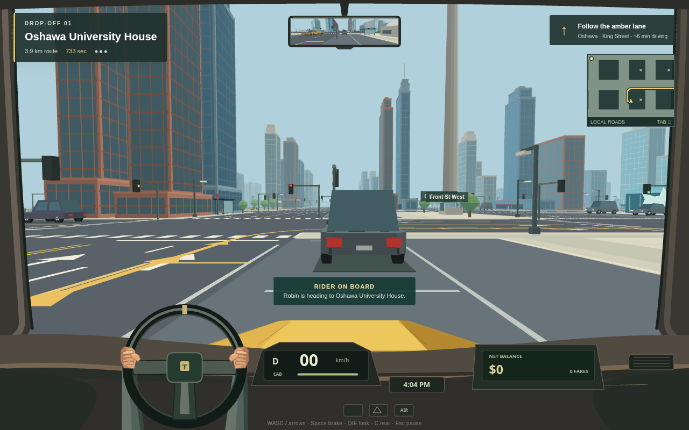
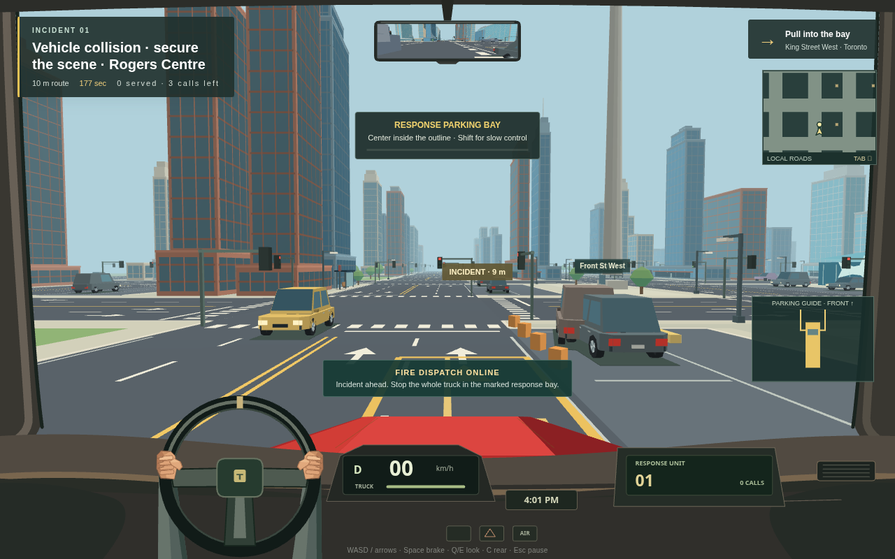

Gameplay3D · Fighter jets · Solo + local P2P
Skybreak Jets
Take the controls of a fighter jet for dogfights, strike missions, and free flight. This is where our development goes next.
PlayOur focus is Skybreak Jets: fighter jets, dogfights, and strike missions. Play in your browser.
Tab choose a game · Enter play

Gameplay3D · Fighter jets · Solo + local P2P
Take the controls of a fighter jet for dogfights, strike missions, and free flight. This is where our development goes next.
Play
Gameplay3D · City driving · Solo
Take the driver’s seat, find your rider, and make the fare. Still playable; no further updates are planned.
Play
Gameplay3D · Emergency driving · Solo
Drive the fire truck through traffic, reach the call, and park in the response bay. Still playable; no further updates are planned.
Play